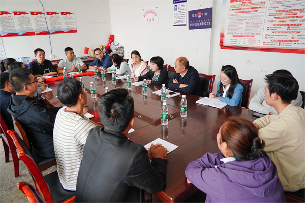

学院通知 · 教学通知
我院院领导赴越西县开展定点帮扶工作调研
发布时间：2026/07/09
为进一步落实驻村帮扶工作，助力推进乡村全面振兴， 7月2日，我院党委书记谭静同志一行赴越西县书古镇斯拉村，调研推进乡村全面振兴与定点帮扶工作。 在斯拉村，谭静书记与当地干部进行交流座谈。越西县委常委、组织部部长周平对谭静书记一行的到来表示热烈欢迎，对我院及驻村工作队的帮扶工作表达诚挚谢意。谭静书记表示，我院将立足斯拉村的发展实际与群众的现实需求，充分发挥我院专业优势，扎实推进定点帮扶各项工作落细落实，全心守护当地群众民生福祉，践行国家队公立医院责任担当。 会上，驻村工作队围绕医疗帮扶、教育帮扶、产业帮扶等方面汇报了工作开展情况。谭静书记代表院党委对驻村干部的辛勤付出与工作成效予以肯定，强调要提高责任感与使命感，切实落实中央与上级党组织关于推进乡村全面振兴工作的各项要求，持续做好各项帮扶工作。驻村干部表示，将发挥共产党员先锋模范作用，树立和践行正确政绩观，将实事办好、把好事办实，强化总结凝练，为乡村全面振兴工作贡献力量。 期间，谭静书记一行还看望慰问了对口支援越西县人民医院口腔科的帮扶医生，走访了斯拉村结对帮扶困难户。 接下来，我院将持续助力推进乡村全面振兴工作，精准细化帮扶举措、优化帮扶资源配置，推动定点帮扶工作走深走实、见行见效，为助力推进乡村全面振兴贡献更多力量。
